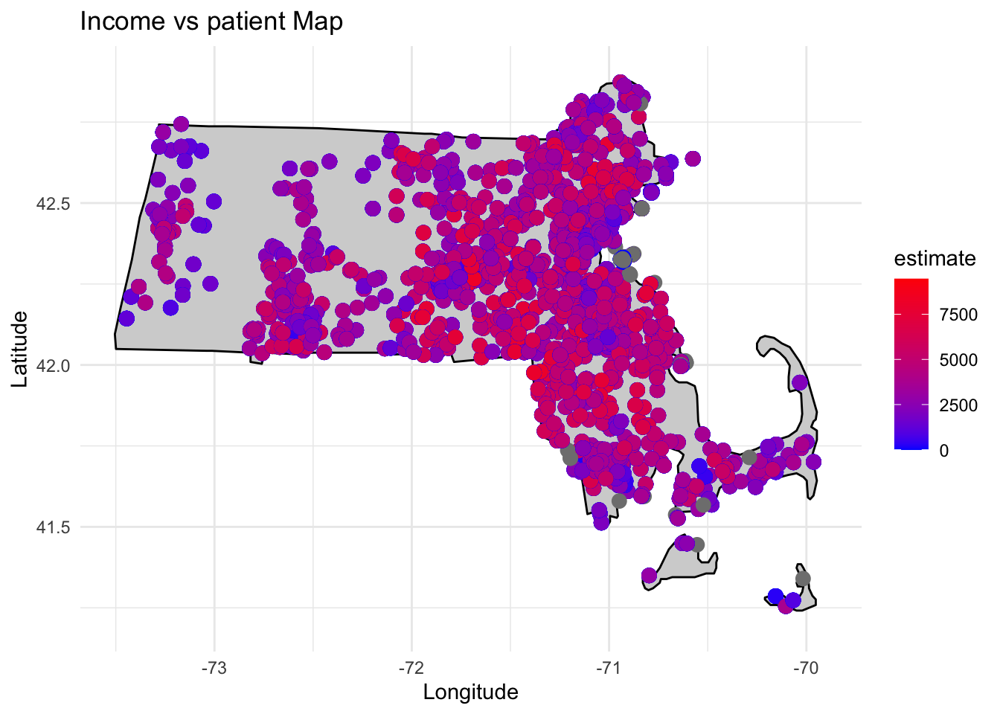

Census Analysis
Census Income vs Patient
0.0.4 Data Preparation
Data set is from Synthetic patient and population health data from the state of Massachusetts
Download complete patients FHIR file from https://synthea.mitre.org/downloads 22G zip tar
Developed python fhir_dataset.py to pull the patients information : patientid, lat, lon, birthdate, gender , start_date_time, end_date_time, code, code_display, start_date, end_date Total patients: 1 million patients
sample result: ran synthea_1m_fhir_3_0_May_24/output_12 code =183478001
output file : patient_encounts_bycode_v2_12.csv
QC dataset. for instance : start date > end date ; misplace birth/death date to hospital stay date
Using the start/end date from patients file run DeGauss pm2.5 model https://degauss.org/pm/
input file for pm2.5 from step 2 command line:docker run –rm -v $PWD:/tmp ghcr.io/degauss-org/pm:0.2.0 tmp/yourdatafile.csv
The following columns been added for each row:
pm_pred : predicted PM2.5 (micrograms per cubic meter)
pm_se : standard error for predicted PM2.5
Output file: patient_encounts_bycode_v2_12_pm_0.2.0.csv
The output file will contain one row per day between start_date and end_date for everyone. Lat(latitude) and lon (longitude) location. This means that the output file will likely contain many more rows than the input file
Run deGUAUSS census block group : https://degauss.org/census_block_group/ Produced a file with additional columns:
• census_block_group_id_2010: identifier for 2010 block group
• census_tract_id_2010: identifier for 2010 tract
• command line:docker run –rm -v $PWD:/tmp ghcr.io/degauss-org/census_block_group:0.5.0 tmp/yourdatafile.csv
Output file: yourdatafile_census_block_group_0.6.0_2010.csv rename to:ms_patient_pm_census_v2.csv
install packages
if(!require('shiny') || !require('tidycensus') || !require('tidyverse') || !require('viridis')) {
install.packages(c("shiny","tidycensus","tidyverse","viridis"))
}
if(!require('plotly')){
install.packages("plotly", type = "source")
}if(!require('ggplot2')) {
install.packages('ggplot2')
install.packages(c("maps","ggmap"))
}
if(!require('maps') || !require('ggmap')) {
install.packages(c("maps","ggmap"))
}Note that the echo = FALSE parameter was added to the code chunk to prevent printing of the R code that generated the plot. ### Load libraries
library(readr)
df <- read_csv("./dataset/ms_patient_pm_census_v2.csv",show_col_types = FALSE)dim(df)## [1] 2979 19colnames(df)## [1] "patientid" "lat"
## [3] "lon" "birthdate"
## [5] "gender" "start_date_time"
## [7] "end_date_time" "code"
## [9] "code_display" "start_date"
## [11] "end_date" "date"
## [13] "year" "h3"
## [15] "h3_3" "pm_pred"
## [17] "pm_se" "census_block_group_id_2010"
## [19] "census_tract_id_2010"0.0.5 use case:
Apply census api key at https://api.census.gov/data/key_signup.html and then supply the key to the
census_api_key()function to use it throughout your tidycensus session.Run r package tidycensus with the api key and the parameters:
• income code = “C17002_001”,“C17002_002”,“C17002_003”,“C17002_004”,
“C17002_005”,“C17002_006”,“C17002_007”, “C17002_008”
• geography = tract • year = 2012 • state = MA • survey = acs5
Create a character vector named income_code containing eight elements. Each element represents a variable code related to income.
income_code <- c("C17002_001","C17002_002","C17002_003","C17002_004","C17002_005","C17002_006",
"C17002_007", "C17002_008")
#Assign the result of the get_acs function to the variable tarr. The function retrieves
#American Community Survey (ACS) data for the specified geography (tract), variables
#(the income_code vector), state (Massachusetts with state code 25), geometry (TRUE to
#include spatial information), survey ("acs5"), and year (2012).
tarr <- get_acs(geography = "tract", variables = income_code,
state = 25, geometry = FALSE,survey = "acs5", year = 2012) ## Getting data from the 2008-2012 5-year ACS## Warning: • You have not set a Census API key. Users without a key are limited to 500
## queries per day and may experience performance limitations.
## ℹ For best results, get a Census API key at
## http://api.census.gov/data/key_signup.html and then supply the key to the
## `census_api_key()` function to use it throughout your tidycensus session.
## This warning is displayed once per session.#Write the census income data into csv file
#modify if (FALSE) to if (TRUE) if you run the first time
if (FALSE) {
write.csv(tarr,"./dataset/income_MA_mult_incomes.csv")
}tarr column name : • Id – census track id • geoid, • name, • variable, • estimate, • moe
Join the patient’s information + degauss pm 2.5 + census block dataset with census income dataset by census track id
Data join output file : asthma_patients_pm_2_census_block_group_0.6.0_2010.csv
dim(tarr)## [1] 11824 5colnames(tarr)## [1] "GEOID" "NAME" "variable" "estimate" "moe"0.0.6 Join the dataframes by the census track id
df column “census_block_group_id_2010” and tarr column “GEOID” are the census track id.
Join these two data frames
library(dplyr)
#merged_frame <- df %>%
# mutate(census_tract_id_2010 = as.character(census_tract_id_2010)) %>%
# inner_join(tarr, by = c("GEOID" = "census_tract_id_2010"))
#left join produce the same result as inner_join
left_merged_frame <- df %>%
mutate(census_tract_id_2010 = as.character(census_tract_id_2010)) %>%
left_join(tarr, by = c("census_tract_id_2010" = "GEOID" ))## Warning in left_join(., tarr, by = c(census_tract_id_2010 = "GEOID")): Detected an unexpected many-to-many relationship between `x` and
## `y`.
## ℹ Row 1 of `x` matches multiple rows in `y`.
## ℹ Row 11769 of `y` matches multiple rows in `x`.
## ℹ If a many-to-many relationship is expected, set `relationship
## = "many-to-many"` to silence this warning.#Write the merged frame data into csv file
#modify if (FALSE) to if (TRUE) if you run the first time
if (FALSE) {
write.csv(left_merged_frame,"./dataset/merged_income_MA_mult_incomes.csv")
}library(dplyr)The county with hightest income in MA by sensus data 2020
# Fetch ACS data for Massachusetts counties
ma_counties <- get_acs(geography = "county", variables = "B19013_001", state = "MA", year = 2020)## Getting data from the 2016-2020 5-year ACS## Using FIPS code '25' for state 'MA'# Sort the data by median household income in descending order
ma_counties_sorted <- ma_counties %>%
arrange(desc(estimate))
# Extract the county with the highest income
highest_income_county <- ma_counties_sorted$NAME[1]
# Print the county with the highest income
cat("The county with the highest income in Massachusetts is:", highest_income_county)## The county with the highest income in Massachusetts is: Nantucket County, Massachusetts0.0.7 install packages for the plot
if(!require('maps') || !require('ggmap')) {
install.packages(c("maps","ggmap"))
library(maps)
library(ggmap)
}
library(ggplot2)colnames(left_merged_frame)## [1] "patientid" "lat"
## [3] "lon" "birthdate"
## [5] "gender" "start_date_time"
## [7] "end_date_time" "code"
## [9] "code_display" "start_date"
## [11] "end_date" "date"
## [13] "year" "h3"
## [15] "h3_3" "pm_pred"
## [17] "pm_se" "census_block_group_id_2010"
## [19] "census_tract_id_2010" "NAME"
## [21] "variable" "estimate"
## [23] "moe"0.0.8 Draw a map with patients and income in color
# Draw Massachusetts map
ma_map <- map_data("state", region = "massachusetts")
#modify column's name
colnames(left_merged_frame)[which(names(left_merged_frame) == "lon")] <- "longitude"
colnames(left_merged_frame)[which(names(left_merged_frame) =="lat")] <- "latitude"
#Optional Filter the rows based on the date range Use the subset() function to
#filter the rows based on the date range:2012 -2017to match 5 year sensus data
filtered_df <- subset(left_merged_frame, date >= as.Date("2012-09-01") & date <= as.Date("2017-09-01"))
# Create a base plot for Massachusetts
p <- ggplot() +
geom_polygon(data = ma_map, aes(x = long, y = lat, group = group),
fill = "lightgray", color = "black") +
# Plot the data points
geom_point(data = filtered_df, aes(x = longitude, y = latitude, color = estimate), size = 3) +
labs(title = "Income vs patient Map", x = "Longitude", y = "Latitude") +
scale_color_gradient(low = "blue", high = "red", name = "estimate") +
theme_minimal() +
# Adjust the map boundaries to focus on Massachusetts
coord_cartesian(xlim = c(-73.5, -69.9), ylim = c(41.2, 42.9))
# Print the map
print(p)